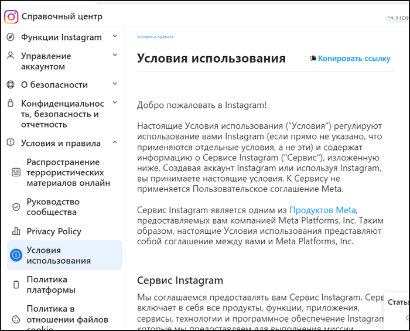
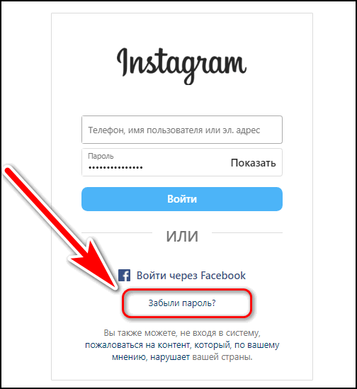
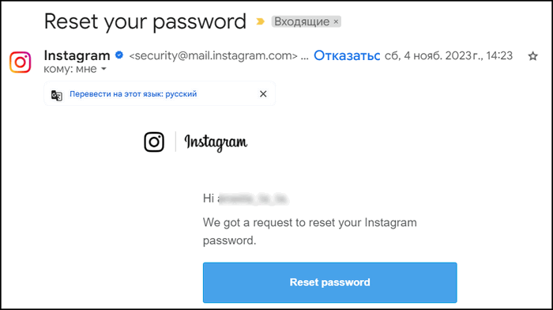
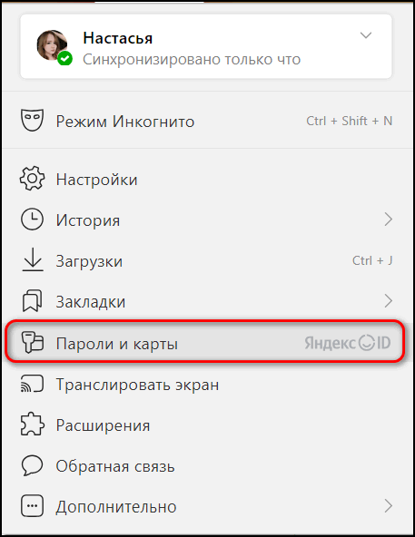
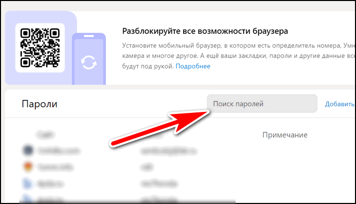
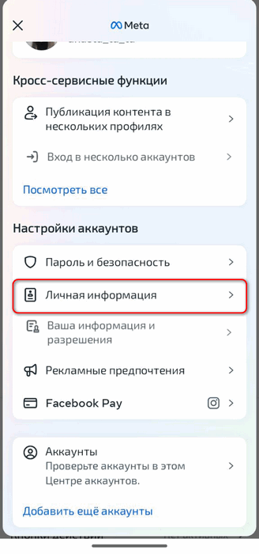
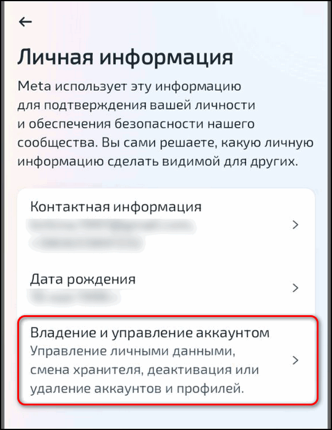
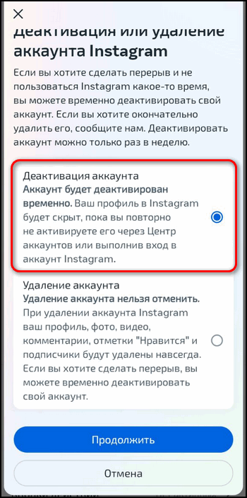
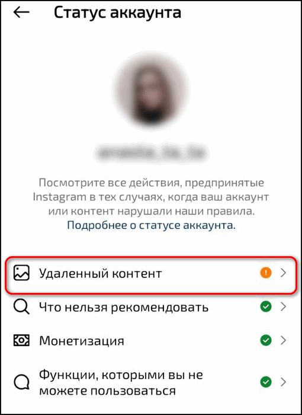

Заблокировали в Инстаграме: причины и решения

Если пользователь размещает контент о политике, эротического характера или любой другой спорной тематики, он может получить уведомление: «аккаунт Инстаграм* заблокирован за нарушение наших условий». В этот момент приложение выбросит на главную и дальнейшая работа с ним невозможна.
Причины блокировки: нарушение правил
Страницы в Инстаграме* в основном блокируют за нарушение правил: будь то язвительные комментарии или публикации. На аккаунт могут подать жалобу другие пользователи и тогда вопрос о блокировке будет рассмотрен модерацией в течение трех дней. С повышением уровня безопасности и приватности, социальная сеть ограничивает многие действия, которые могут быть неприятны другим.
Меры, которые были введены:
- скрытые комментарии. Отклики, которые находятся в конце страницы и отмечены соответствующей надписью;
- возможность настраивать конфиденциальность для своих публикаций. Ограничение аудитории, которая увидит новый пост;
- аккаунты с ограниченными правами. Настройки, которые запрещают посетителям страницы получат уведомления о новых записях, Историях;
- расширенные пункты с жалобами на чужой аккаунт. Где есть: ограничения по возрасту, фейковые новости или использование фото и видео-материалов третьими лицами.
Когда страницу блокируют, пользователь получает уведомление лишь о том, что доступа к учетной записи уже нет. Но он может обжаловать это решение и восстановить страничку.
До этого следует три предупреждения, которые согласно нововведениям, можно посмотреть в разделе «Статус аккаунта». Там указан весь заблокированный контент, включая временные публикации и комментарии.
Жалобы других пользователей
Если владелец страницы нередко публиковал провокационный контент, оскорблял других пользователей – на него могут пожаловаться. Причины для личных жалоб несколько:
- использовал чужие материалы без разрешения автора, чтобы такого не было используйте соавторство;
- размещал записи от чужого лица;
- оскорблял по половому, национальному и расовому признаку;
- намеренно оклеветал другого человека;
- занимается мошенничеством, продажей незаконных веществ, оружия.
Жалобы, как и другие потенциальные причины для блокировки, будут отображены в разделе «Статус аккаунта». Он доступен владельцам бизнес профилей, авторам, закрытых и публичных, кстати, закрытый аккаунт можно посмотреть, писала инструкцию тут.

Для блокировки профиля либо нужна веская причина, либо до 5 жалоб на определенные действия. Каждый отзыв будет проверен модерацией и уже после вынесен вердикт.Блокировка по геолокации
Если заблокировали Инстаграм* по геолокации, то восстановить по этой причине проще остальных. Под эту категорию нередко попадают жители СНГ стран, проживающие в зоне проведения специальной военной операции и Крыма. Владельца в этом случае не предупреждают, что страница будет заблокирована. На прикрепленный адрес электронной почты придет уведомление, где будет указано, что страница в блоке, но её можно восстановить. Повторная блокировка происходит редко.
Неправильно ввел пароль
Неправильный ввод данных также одна из причин, почему страницу могут временно заблокировать. Если владелец ввел более 10 раз комбинацию неверно, то появится уведомление: «Попробуйте через 24 часа». В этом случае остается только один вариант – подождать окончания срока.

В другой ситуации, если пользователь не уверен в правильности вводимых символов – стоит перейти к функции «Забыл пароль». С её помощью можно установить новую комбинацию и уже с её помощью войти в учетную запись.
Сложнее сбросить пароль, если установлена двухфакторная аутентификация. Нужно указать способ с восстановлением с помощью дополнительного приложения, СМС или адреса электронной почты, которые были выбраны для ввода дополнительного пароля.
2 способа как разблокировать
Разблокировать, если Инстаграм* заблокировал аккаунт, можно двумя способами:
- подтверждение личности. Используя раздел «Забыл пароль» или перейдя в чат с технической поддержкой.
- поискать пароль в браузере. Если пользователь ранее входил в социальную сеть с помощью компьютерной версии или на телефоне установлена функция с сохранением данных для ввода в приложениях.
Подтверждение личности потребует от владельца новой фотографии с комбинацией, которая будет отправлена по привязанному адресу электронной почты. Также, желательно чтобы в аккаунте были размещены личные снимки, где видно лицо. Так процесс восстановления будет проще для модераторов.
Вариант с поиском пароля поможет, если было использовано менее 10 попыток для ввода. То есть, страница еще активна и не заблокирована временно.
Подтверждение личности в Инстаграме*
Чтобы разблокировать страницу в Инстаграме* и воспользоваться восстановлением с помощью подтверждения личности, нужно:
- использовать опцию: «Мне нужна помощь»;
- отдельно перейти в раздел технической поддержки.
Предположим, что пришло уведомление о том, что страница заблокирована и приложение выбросило на главную. Действия владельца должны быть следующими:
- Открыть приложение – перейти к вводу персональных данных.
- Появится уведомление о том, что страница заблокирована.
- Нажать по кнопке: «Подробнее» - появится страница с возможностью обжаловать решение администрации.
- Указать свой адрес электронной почты для связи – добавить имя, фамилию.
- Написать короткий текст, где указать что не согласны с решением администрации – отправить.
На адрес электронной почты придет уведомление, что запрос принят на рассмотрение. В течение трех суток поступит ответ и если администрация не увидит серьезных нарушений – в письме будет код. Его нужно написать на листе бумаги, сделать фотографию и отправить ответным письмом. Иногда пользователям приходит ссылка, открыв которую, появится окно с возможностью записать видео и сказать цифры, появившееся на экране. После этих действий нужно еще подождать пару дней и следить за новыми сообщениями на email. Будет письмо с еще одной ссылкой, перейдя по которой можно сбросить предыдущий пароль и восстановить доступ к странице.
Найти пароль в браузере
Если пользователь ранее посещал страницу с компьютерной версии или на его смартфоне разрешена функция сохранения паролей – отыскать комбинацию можно в разделе «Данные сайтов». Например, в Яндекс Браузере эта вкладка находится в настройках веб-обозревателя:
- Открыть браузер – нажать сверху по трем горизонтальным полоскам.

- Пароли и карты – в небольшом окне с надписью «Поиск» ввести instagram*.

- Появятся все логины и пароли, которые когда-то были введены в браузере.
На смартфоне, в разделе «Настройки», отыскать пароль также возможно:
- Зайти в «Настройки» на телефоне.
- Открыть «Данные пользователя и пароли».
- Найти в списке социальную сеть и посмотреть пароль.
Сработает на устройствах под управлением Android, где ранее добавляли аккаунт Инстаграма*.
Виды блокировки
Не каждый тип блокировки социальной сети можно сбросить. Так, теневой бан невозможно убрать самостоятельно или сделать это через запрос в администрацию. К основным видам ограничений относятся:
- перманентный бан. Страница удалена из социальной сети, не подлежит восстановлению. Пользователь может скачать данные в течение 30 дней;
- временная блокировка. До двух недель: в аккаунт либо не получается войти, либо ограничены некоторые действия;
- теневой бан. В ленте не появляются новые публикации, страница не выходит в ТОП, падение статистики.
Другие виды:
- заблокирован другим пользователем. Нет доступа к чужому аккаунту: закрыты записи, отсутствует кнопка подписки;
- ограниченные права в чужом профиле. Подписка есть, но не видны последние записи человека, невозможно оставить комментарий, сообщения не отправляются или не прочитаны получателем.
К блокировке не относится ограничение на просмотр Историй. Если вам не видны Сторис другого человека, например подруга или бывший скрыли их от вас, но точно знаете что он их публиковал – значит вы не добавлены в список «Близкие друзья».
Теневой бан
Теневая блокировка – неоднозначный способ ограничения действий пользователя. В первую очередь по той причине, что администрация не признает напрямую его существование. Но в некоторых статьях и пояснениях от модераторов можно увидеть цитату: «ограничение на действия некоторых пользователей, чтобы обеспечить безопасность остальных». Определить, что на странице теневой бан не сразу удается. Блогеры могут отследить через статистику: резкое уменьшение посещаемости, нет новых подписчиков и притока аудитории. Владельцы небольших аккаунтов заметят теневой бан чуть позже и основным критерием, чтобы определить, будет минимальное количество новых постов в Ленте.
Временно заблокировали в Инстаграме*
Временная блокировка блокирует действия по которым был превышен лимит. В социальной сети есть ограничения по максимальному количеству лайков, комментариев и подписок, которые обусловлены давностью создания учетной записи, частоте размещения постов и предыдущим нарушениям. Блокировка длится несколько дней, но если пренебречь предупреждениями – может растянуться до нескольких месяцев. Но есть один вариант, как быстро обнулить:
- Зайти в социальную сеть – перейти в свой аккаунт.
- Настройки – Центр управления.

- Личная информация – Владение и управление аккаунтом.

- Деактивировать – подтвердить.

Такая форма удаления учетной записи предполагает восстановление спустя 30 дней. И владелец вправе восстановить её ранее: указав логин и пароль. Профиль не будет удален, а только из исключен из общего поиска. Также недоступны сообщения, комментарии и лайки. Владельцу нужно выждать минимум пару суток, чтобы обнулить лимиты. После этого – вернуться на страницу и попробовать постепенно совершать какие-либо действия.
Избежать блокировки в дальнейшем: 10 советов
Чтобы страницу в Инстаграме* не заблокировали нужно внимательно прочесть правила соглашения. Пользователи, нарушающие требования социальной сети, несут опасность для ментального здоровья остальной части сообщества. А жалуясь на аккаунт, который нарушает правила, внимательный участник помогает администрации находить нарушителей. Поэтому, чтобы страницу не блокировали, нужно следовать нескольким правилам:
- не размещать провокационные темы: политика, «разоблачения» и скандалы;
- стараться не оставлять комментарии, которые могут оскорбить других пользователей;
- регулярно менять пароль и запоминать недавно установленный. Использовать только сложные комбинации, состоящие из букв, символов и цифр;
- проверять местоположение, откуда был совершен вход в аккаунт;
- следить за лимитами. Не ставить лайки на любые посты, то же касается комментариев и подписки;
- удалять однотипные отклики под своими постами;
- установить личное фото, чтобы в дальнейшем быстро восстановить страницу;
- не использовать накрутку в качестве продвижения;
- минимально участвовать в событиях «Взаимные лайки/комментарии»;
- следить за состоянием раздела: «Статус аккаунта».

Например, если владелец страницы вел небольшой блог с минимальной активностью, но внезапно статистика выросла и появилась масса однотипных комментариев – социальная сеть расценит это как накрутку. Также нужно внимательно отслеживать все ранее подключенные приложения и сервисы через вкладку: «Сайты и разрешения».